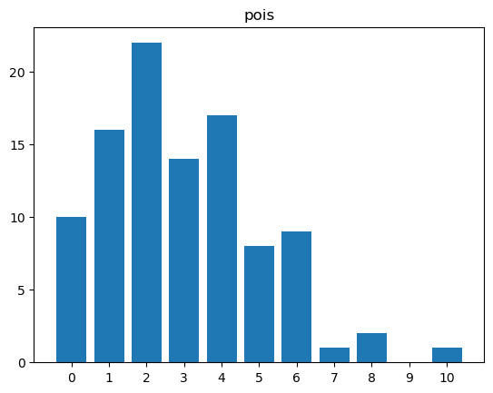
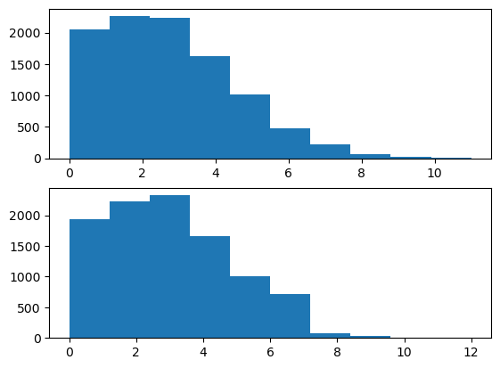
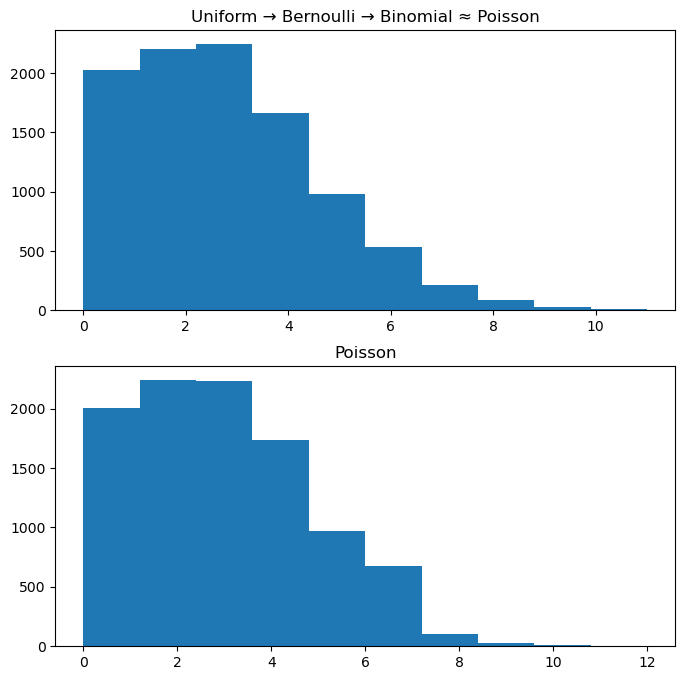
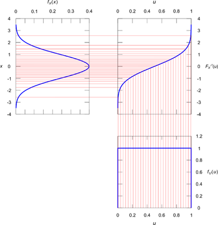
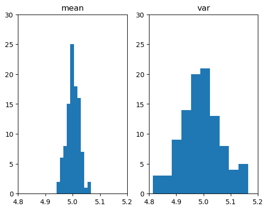

최규빈 교수님 통계전산 수업 정리
수업에서는 Julia를 사용하지만 필요한 부분만 Python으로 바꾸어 작성하겠다.
통계 전산
로드맵
- 통계
- 일반통계학 개념의 백업
- 여러가지 분포리뷰, 어떠한 분포에서 샘플을 추출하는 방법
- 수렴
- 추정 및 검정
- 부트스트랩
- 선형회귀분석
- 선형대수학
- 백터공간, rank
- 직교행렬, 사영행렬, 양정치행렬…
- 매트릭스를 해석하는 방식 (이미지, 데이터프레임, 변환)…
- 분해이론: 고유값분해, SVD
- 벡터나 매트릭스의 미분..
베르누이
이항분포
1회당 성공확률이 p. n번을 시행해서 성공한 횟수가 X. 이를 N번 반복해서 나온 성공값들을 분포로 나타낸게 이항분포?
포아송분포
- 포아송분포의 요약
X의의미: 발생횟수의 평균이 λ인 분포에서 실제 발생횟수를 X라고 한다.
X의범위: 발생안할수도 있으므로 X=0이 가능. 따라서 X=0,1,2,3,…
파라메터의 의미와 범위: λ = 평균적인 발생횟수; λ>0.
pdf:
mgf:
E(X): λ
V(X): λ
단위시간동안 어떤 이벤트가 발생했는데, 그 이벤트의 횟수가 포아송.
포아송분포의 예시
콜센타에 걸려오는 전화의 수, 1시간동안
레스토랑에 방문하는 손님의 수, 하루동안
웹사이트를 방문하는 사람의 수, 1시간동안
파산하는 사람의 수, 1달동안
네트워크의 끊김 수, 1주일동안
How to generate it?
평균 3인 포아송분포에서 100개 샘플을 뽑는 방법
방법1)
array([ 6, 6, 1, 3, 0, 4, 3, 5, 1, 6, 2, 2, 1, 6, 4, 1, 4,
2, 2, 7, 0, 2, 3, 5, 1, 2, 4, 2, 0, 5, 1, 0, 2, 0,
1, 2, 1, 3, 1, 2, 8, 0, 4, 4, 2, 1, 3, 3, 2, 5, 0,
0, 1, 3, 2, 5, 3, 3, 1, 8, 4, 2, 4, 2, 2, 2, 6, 3,
6, 1, 5, 4, 4, 2, 3, 3, 2, 6, 1, 10, 5, 6, 3, 1, 4,
6, 1, 2, 4, 4, 4, 4, 4, 4, 5, 2, 2, 0, 3, 0])unique_values, count = np.unique(pois, return_counts=True)
plt.xticks(np.arange(0,11,1)) # x축 1간격
plt.bar(unique_values, count)
fig = plt.gcf()
ax = plt.gca()
ax.set_xlim([-1,11])
plt.title("pois")Text(0.5, 1.0, 'pois')
방법2) 이항분포의 포아송근사를 이용
이론: 이항분포에서 (1) \(n→\infty\) (2) \(p→0\) (3) \(np=\lambda\) 이면 이것은 평균이 \(\lambda\) 인 포아송분포로 근사함.
평균이 \(\lambda\) 인 포아송분포는 \(B(n,\frac{\lambda}{n})\) 로 근사할 수 있다. 이때 \(n\)이 커질수록 더 정확해짐.
N = 10000
λ = 3
n = 10000
p = λ/n
X = np.random.binomial(n, p, N)
Y = np.random.poisson(λ, N)
fig, ((ax1), (ax2)) = plt.subplots(2,1)
ax1.hist(X);
ax2.hist(Y);
방법3) 균등분포 → 베르누이 → 이항분포 ≈ 포아송
- 1분동안 맥도날드에 평균 3명이 온다고 생각
- 이건 사실 1초에 성공확률이 0.05인 베르누이 시행을 1번 시행하여 1분동안 총 60회 반복한 것으로 이해할 수 있음.
- 좀 더 세밀하게는 0.001초에 성공확률이 5.0e-5인 베르누이 시행을 1번 시행하여 1분동안 총 60000회 반복한 것으로도 이해할 수 있음. (무한반복 가능)
- 느낌: 하여튼 (1) “엄청 작은 시간”에 (2) “엄청 작은 확률”의 베르누이 시행이 (3) “엄청 많이 독립적으로 반복” 되는 느낌을 기억!! = 포아송 프로세스
fig, ((ax1), (ax2)) = plt.subplots(2,1, figsize=(8,8))
ax1.hist(X)
ax2.hist(np.random.poisson(λ, N));
ax1.set_title("Uniform → Bernoulli → Binomial ≈ Poisson")
ax2.set_title("Poisson")Text(0.5, 1.0, 'Poisson')
방법4) 균등분포 → inverse cdf method를 이용해서 생성할 수 있음.
-Inverse CDF Method?? 모든 확률 분포의 누적 분포 함수(cumulative distribution function, cdf)가 균등분포를 따른다는 성질을 이용한 방법

보통 난수를 일으킬 때에는 균등분포 난수 생성기를 이용하여 난수를 일으킨다. 그런데 만약 어떤 특정한 함수를 따르는 난수를 만들어내고 싶다면?? Inverse CDF Method를 사용하면 된다. 추후 수식 관련하여 자세히 다루기.
포아송 분포의 합은 다시 포아송분포가 된다.
이론: \(X \sim Poi(\lambda_1), Y \sim Poi(\lambda_2), X \bot Y \Rightarrow X+Y\sim Poi(\lambda_1+\lambda_2)\)
의미?: (1) 1분동안 맥도날드 매장에 들어오는 남자의 수는 평균이 5인 포아송 분포를 따름. (2) 1분동안 맥도날드 매장에 들어오는 여자의 수는 평균이 4.5인 포아송 분포를 따름. (3) 남자와 여자가 매장에 오는 사건은 독립 \(\rightarrow\) 1분동안 맥도날드 매장에 오는 사람은 평균 9.5인 포아송 분포를 따른다는 의미
평균과 분산의 추정
N = 1000
λ=5
X=np.random.poisson(λ, N)
print(f"평균: {λ}\
\n평균의 추정치: {np.mean(X)}\
\n분산: {λ}\
\n분산의 추정치: {np.var(X)}")평균: 5
평균의 추정치: 5.017
분산: 5
분산의 추정치: 4.910711- 생각해보니까 이론적으로 평균과 분산의 값이 같아야 한다는 걸 알고 있다. 그런데 왜 추정치가 달라야하나?? 둘 중 하나만 있으면 될 것 같다.
mean(X), var(X)로 \(\lambda\)를 추정
fig, ((ax1), (ax2)) = plt.subplots(1,2)
ax1.set_xlim([4.8, 5.2])
ax2.set_xlim([4.8, 5.2])
ax1.set_ylim([0, 30])
ax2.set_ylim([0, 30])
ax1.hist(p1)
ax2.hist(p2)
ax1.set_title("mean")
ax2.set_title("var");
히스토그램을 그려보니까 누가봐도 mean(X)로 λ를 추정하는 것이 var(X)로 λ를 추정하는 것보다 좋아보인다.
그냥 평균을 추정한다음 이 값을 평균과 분산이라고 주장하면 안되나? \(\Rightarrow\) 된다!! 이게 바로 MLE